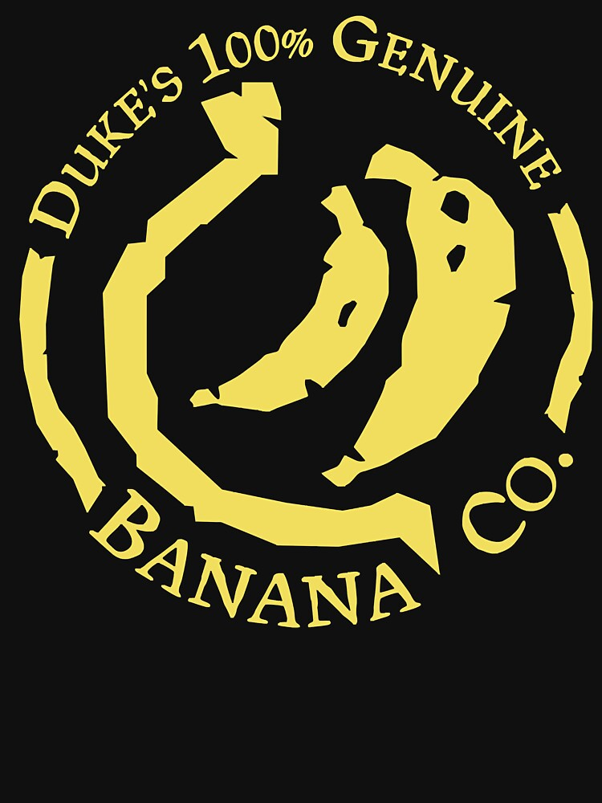

Dans Sea of Thieves , il y a ce qu'on pourrait apparenter à une faction mais se trouvent plus etre un groupement d'aventuiers chevronnées ou non qui re réunissement et se partagent les aventures et les dernières infos entre eux pour s'épauler donc voici désormais les Fonds De Cale sujets divers et multiples sont ici bas allez venez donc vous asseoir un grog un deux à la main et c'est parti
Comme tout bon pirate vous allez accumuler lors de vous aventure moultes richesses et trésors mais qu'elle est donc ce tas au fond ? ce sont les objets que vous ne connaissez donc point la valeur ? allons venez donc et laisser moi vous faire découvrir du plus commun au plus mystérieux de vos trophées
La Mer Des Voleurs permet tout autant d'y faire fortune que d'y perdre la vie car il y a toujours quelque chose à y faire où le gain est toujours aussi haut que la perte Des forteresses aux flotte fantômes jusqu'au monstres des profondeurs les plus absolues
La vie trépignante de Pirate ne vous siez guère ou vous préférerez avoir un temps de repos avant de remettre le pied dans les eaux les plus tourmentées alors pourquoi pas découvrir des activités secondaires qui ne manqueront pas de vous détendre